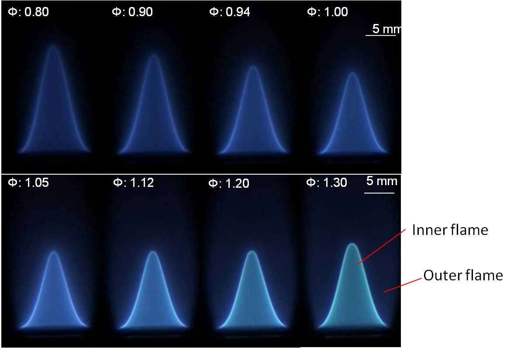
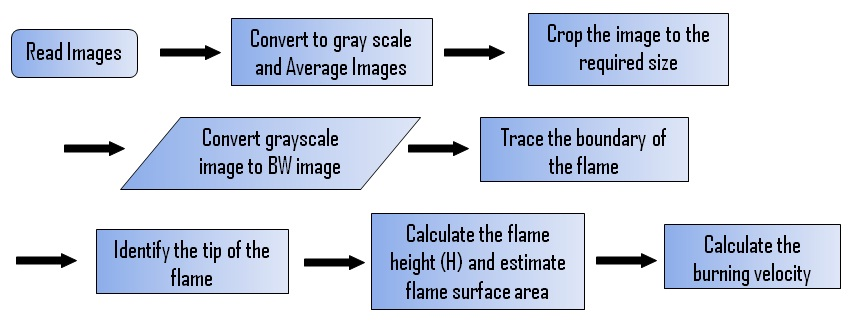
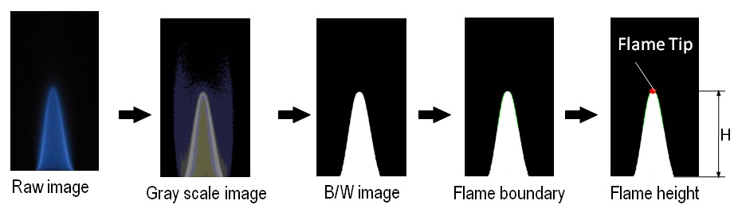
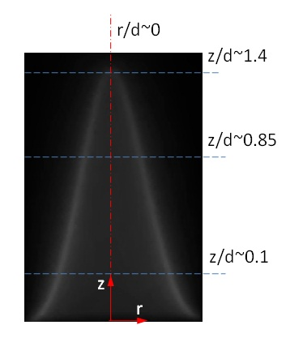
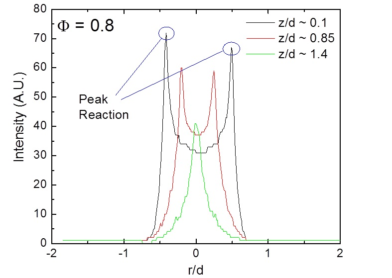
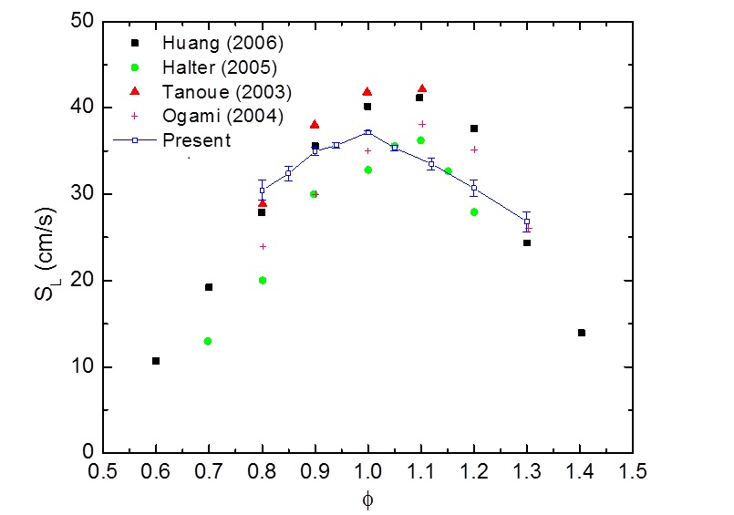

Effect of Equivalence Ratio on Flame Appearance

- For the rich flame (0 > 1.00), bright inner and a faint outer flame are observed.
- The outer flame is caused due to the burning of hot unburnt fuel with the entrained ambient air.
- Attached video shows the transition from lean to rich flame and appearance of the outer flame.
Methodology (Image Processing)
 
Locations on the Flame Image for Data Extraction

Above figure shows the typical locations at which necessary data for estimating the flame area are extracted.
Intensity Distribution at Different Axial Locations of Flame

- Intensity distribution along the radius at three axial locations of the flame is shown above.
- Two peaks are observed for z/d = 0.1 and 0.85; z/d = 1.4 has a single peak.
- These peak points are used to estimate the flame surface area.
Effect of Equivalence Ratio on Burning Velocity
Variation of burning velocity with equivalence ratio for CNG-air mixture

- The estimated burning velocity (SL) of the laminar flame varies non-monotonically with the equivalence ratio (F).
- SL first increases as the flame nears the stoichiometric composition from fuel-lean conditions, where it is small.
- It again decreases as the flame burns in increasingly fuel-rich conditions.
- Peak SL is attained near the stoichiometric mixture composition (F = 1.0).